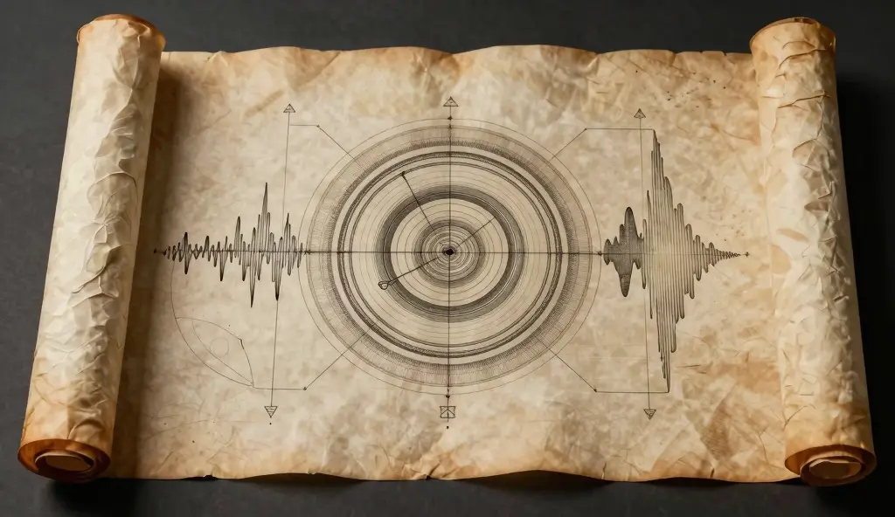

  <script type="application/ld+json">
  {
    "@context": "https://schema.org",
    "@type": "Article",
    "headline": "Law of Attraction: Overview — A Historical Digest",
    "description": "A complete historical overview of the Law of Attraction, tracing its origins from ancient Hermetic and Eastern philosophy through the New Thought movement to the modern era.",
    "url": "https://www.lawofattractioncentral.net/",
    "mainEntityOfPage": {
      "@type": "WebPage",
      "@id": "https://www.lawofattractioncentral.net/"
    },
    "image": {
      "@type": "ImageObject",
      "url": "https://www.lawofattractioncentral.net/emerald-tablet-historical-scroll.webp",
      "caption": "Ancient Hermetic vibration scroll diagram detailing the Emerald Tablet foundations",
      "width": "800",
      "height": "500"
    },
    "dateModified": "2026-05-30",
    "datePublished": "2013-01-01",
    "author": {
      "@type": "Person",
      "name": "Don Allen"
    },
    "publisher": {
      "@type": "Organization",
      "name": "Law of Attraction Central",
      "url": "https://www.lawofattractioncentral.net"
    },
    "about": [
      {
        "@type": "Thing",
        "name": "Law of Attraction",
        "description": "The philosophical principle that positive or negative thoughts bring positive or negative experiences into a person's life."
      },
      {
        "@type": "Thing",
        "name": "Hermeticism",
        "description": "An ancient philosophical and religious tradition centred on the Emerald Tablet and the principle of correspondence."
      },
      {
        "@type": "Thing",
        "name": "The Emerald Tablet",
        "description": "A foundational Hermetic text containing the axiom 'As above, so below' — the philosophical bedrock of the Law of Attraction."
      },
      {
        "@type": "Thing",
        "name": "New Thought Movement",
        "description": "A 19th-century philosophical movement that framed thought as a tangible, creative force capable of shaping external reality."
      },
      {
        "@type": "Thing",
        "name": "Karma",
        "description": "The Buddhist and Hindu concept that present circumstances are the downstream result of past and present actions — a foundational parallel to LOA thinking."
      }
    ],
    "mentions": [
      { "@type": "Person", "name": "Neville Goddard" },
      { "@type": "Person", "name": "Gautama Buddha" },
      { "@type": "Person", "name": "Napoleon Hill" },
      { "@type": "Person", "name": "Prentice Mulford" },
      { "@type": "Person", "name": "William Walker Atkinson" },
      { "@type": "Person", "name": "Wallace D. Wattles" },
      { "@type": "Person", "name": "Charles Haanel" },
      { "@type": "Person", "name": "Robert Collier" },
      { "@type": "Person", "name": "Deepak Chopra" },
      { "@type": "Book", "name": "The Emerald Tablet" },
      { "@type": "Book", "name": "Thoughts Are Things", "author": { "@type": "Person", "name": "Prentice Mulford" } },
      { "@type": "Book", "name": "The Science of Getting Rich", "author": { "@type": "Person", "name": "Wallace D. Wattles" } },
      { "@type": "Book", "name": "The Master Key System", "author": { "@type": "Person", "name": "Charles Haanel" } },
      { "@type": "Book", "name": "Think and Grow Rich", "author": { "@type": "Person", "name": "Napoleon Hill" } },
      { "@type": "Book", "name": "The Seven Spiritual Laws of Success", "author": { "@type": "Person", "name": "Deepak Chopra" } }
    ]
  }
  </script>

  <style>
    /* ── BASE ── */
    *, *::before, *::after { box-sizing: border-box; margin: 0; padding: 0; }

    body {
      font-family: 'Lato', sans-serif;
      background: #f9f6f0;
      color: #555;
      line-height: 1.85;
    }

    a {
      color: inherit;
      text-decoration: none;
    }

    /* ── LAYOUT ── */
    .page-wrapper {
      max-width: 780px;
      margin: 0 auto;
      padding: 60px 32px 100px;
    }

    /* ── HEADINGS ── */
    h1, h2, h3, h4, h5, h6 {
      color: #1a1a1a;
      font-family: 'Cormorant Garamond', serif;
      font-weight: 600;
      line-height: 1.25;
    }

    h1 {
      font-size: clamp(2rem, 5vw, 3rem);
      margin-bottom: 2rem;
      letter-spacing: -0.01em;
    }

    h2 {
      font-size: clamp(1.5rem, 3.5vw, 2rem);
      margin-top: 3rem;
      margin-bottom: 1rem;
      padding-bottom: 0.4rem;
      border-bottom: 1px solid #e8e0d4;
    }

    h3 {
      font-size: clamp(1.15rem, 2.5vw, 1.45rem);
      margin-top: 2rem;
      margin-bottom: 0.75rem;
      color: #2a2a2a;
    }

    /* ── PARAGRAPHS ── */
    p {
      margin-bottom: 1.4rem;
      font-size: 1.0625rem;
    }

    em { font-style: italic; }

    /* ── SECTION DIVIDER (,,,) ── */
    .section-divider {
      display: flex;
      align-items: center;
      gap: 1rem;
      margin: 3rem 0 2rem;
    }

    .section-divider::before,
    .section-divider::after {
      content: '';
      flex: 1;
      height: 1px;
      background: linear-gradient(to right, transparent, #d4af7a, transparent);
    }

    .section-divider span {
      color: #d4af7a;
      font-family: 'Cormorant Garamond', serif;
      font-size: 1.4rem;
      letter-spacing: 0.3em;
      line-height: 1;
    }

    /* ── IMAGES ── */
    .responsive-image {
      display: block;
      margin: 40px auto;
      max-width: 100%;
      height: auto;
      border-radius: 4px;
    }

    /* ── BLOCKQUOTE ── */
    blockquote {
      background: #ffffff;
      border-left: 6px solid #d4af7a;
      box-shadow: 0 8px 25px rgba(0, 0, 0, 0.07);
      border-radius: 4px;
      padding: 2rem 2rem 1.5rem 2.5rem;
      margin: 2rem 0;
      position: relative;
    }

    blockquote::before {
      content: '\201C';
      color: #d4af7a;
      font-family: 'Cormorant Garamond', serif;
      font-size: 5rem;
      line-height: 1;
      position: absolute;
      top: -0.15rem;
      left: 0.75rem;
      pointer-events: none;
    }

    blockquote p {
      color: #222;
      font-family: 'Cormorant Garamond', serif;
      font-size: 1.2rem;
      line-height: 1.75;
      margin: 0 0 0.75rem;
    }

    blockquote cite {
      display: block;
      color: #7a5f3a;
      font-family: 'Lato', sans-serif;
      font-size: 0.85rem;
      letter-spacing: 0.08em;
      text-transform: uppercase;
      font-style: normal;
    }

    /* ── HORIZONTAL RULE ── */
    hr {
      border: none;
      border-top: 1px solid #e8e0d4;
      margin: 3rem 0;
    }

    /* ── FURTHER READING LIST ── */
    .further-reading {
      list-style: none;
      padding: 0;
      margin: 1.5rem 0;
    }

    .further-reading li {
      padding: 0.65rem 0 0.65rem 1.25rem;
      border-bottom: 1px solid #ede8e0;
      font-size: 1rem;
      position: relative;
    }

    .further-reading li::before {
      content: '–';
      color: #d4af7a;
      position: absolute;
      left: 0;
    }

    .further-reading li:last-child {
      border-bottom: none;
    }

    /* ── SOURCES NOTE ── */
    .sources-note {
      font-size: 0.875rem;
      color: #888;
      font-style: italic;
      line-height: 1.7;
    }
  </style>


  <main class="page-wrapper" id="main-content">

    <h1>Law of Attraction: Overview — A Historical Digest</h1>

    <p>The phrase "Law of Attraction" feels modern. It gained mainstream currency after the release of <em>The Secret</em> in 2006 and Oprah Winfrey's subsequent endorsement, and for many people that's where the story begins. But that framing misses something important: the ideas behind the Law of Attraction are not new. They surface in ancient Hermetic texts, in the teachings of the Buddha, in Hindu philosophy, and in the work of nineteenth century Western thinkers who were trying to build a practical science out of what mystics had always intuited.</p>

    <p>This overview is written for two kinds of readers: those who are new to the Law of Attraction and want a reliable historical grounding before going deeper, and those who already practice LOA principles but have never traced where those ideas actually came from. In both cases, understanding the full lineage makes the philosophy more useful, not less.</p>

    <p>This article draws on primary texts, established academic scholarship on Buddhist and Hindu philosophy, and more than a decade of independent research at Law of Attraction Central. Where we cite specific claims about religious or philosophical tradition, we link to the relevant academic or institutional source.</p>

    <!-- ,,, -->
    <div class="section-divider" aria-hidden="true"><span>✦ ✦ ✦</span></div>

    

    <h2>Ancient Foundations: The Earliest Recorded Evidence</h2>

    <h3>The Hermetic Tradition</h3>

    <p>The oldest recorded expression of what we now call the Law of Attraction appears in the Emerald Tablet, a foundational Hermetic text whose precise origins are debated among scholars but whose influence on Western esoteric thought is well documented. Historians of religion, including those at the Gnosis Archive, trace its core principles through Neoplatonism, alchemy, and early Renaissance philosophy. Its central axiom has never been improved upon:</p>

    <blockquote>
      <p>As above, so below. As within, so without.</p>
      <cite>— The Emerald Tablet, Hermetic tradition</cite>
    </blockquote>

    <p>This principle of correspondence — the idea that the inner world and the outer world mirror each other — is the philosophical bedrock on which every subsequent LOA framework has been built. The Hermetic tradition understood that consciousness was not a passive observer of reality but an active participant in shaping it.</p>

    <h3>The Eastern Connection: Karma, Vibration, and Dharma</h3>

    <p>The Law of Attraction finds some of its clearest ancient expression in Hindu and Buddhist philosophy, and the connections are more than superficial.</p>

    <p>The concept of karma is central to both traditions. The word derives from the Sanskrit root <em>kri</em>, meaning "to do" or "to act," and is documented extensively in both the Pali Canon of Theravada Buddhism and the Upanishads of the Hindu tradition. The Buddha used karma specifically to explain the inequality of human experience: present circumstances are the downstream result of past and present actions. In the LOA framework, those actions are themselves the product of thought and feeling. The chain runs from inner to outer.</p>

    <p>The Buddhist Law of Vibration adds another layer. As documented in early Buddhist texts and explored in contemporary scholarship on Buddhist philosophy, all matter — including thought — is understood to transmit vibration, returned at the same frequency at which it is sent. Positive thought vibrates at a higher frequency than negative thought, and the universe responds accordingly. This aligns with the concept of Dharma, the natural ordering principle of existence described in both Hindu and Buddhist teaching. The core instruction is consistent across both traditions: the quality of what you generate inwardly determines what you encounter outwardly.</p>

    <p>These are not metaphors imported into LOA thinking after the fact. They are foundational ideas that the later New Thought writers drew on explicitly and repeatedly.</p>

    <!-- ,,, -->
    <div class="section-divider" aria-hidden="true"><span>✦ ✦ ✦</span></div>

   

    <h2>The Nineteenth Century: New Thought and the Western Synthesis</h2>

    <h3>Why the Nineteenth Century Matters</h3>

    <p>The New Thought movement of the 1800s was the pivotal moment when ideas about the creative power of thought moved from religious and mystical contexts into something that resembled a practical philosophy for everyday life. This shift matters because it is what makes the Law of Attraction accessible rather than esoteric, and it gave the twentieth century's most influential success writers the vocabulary they needed.</p>

    <h3>Prentice Mulford and the Idea That Thoughts Are Things</h3>

    <p>Prentice Mulford is one of the founding figures of the New Thought movement and one of its most consequential for our purposes. His 1889 work <em>Thoughts Are Things</em> established a premise that would become the movement's central mantra: every thought is a literal form of energy. It travels. It attracts its own kind. It has consequences.</p>

    <p>Mulford's contribution was not merely philosophical. By framing thought as a tangible, functional thing rather than a private mental event, he gave every writer who came after him a framework that bridged the mystical and the practical. His essays are available in full through Project Gutenberg and reward reading directly.</p>

    <h3>Robert Collier and the Primacy of Desire</h3>

    <p>Robert Collier's <em>The Secret of the Ages</em> (1926) and <em>The Secret Power</em> are less widely read today than they deserve to be. Collier's clearest insight — that the first principle of success is desire, knowing what you want — remains as direct and useful a description of the first step in conscious LOA application as anything written since. His influence on the success literature of the twentieth century is unmistakable once you know to look for it.</p>

    <h3>William Walker Atkinson and the Coining of the Term</h3>

    <p>The exact phrase "Law of Attraction" does not appear in print until the early twentieth century. William Walker Atkinson, a New Thought author with serious grounding in Hindu philosophy, is widely credited as the first to use it in published form. In 1906 he published two works: <em>Dynamic Thought or the Law of Vibrant Energy</em> and <em>Thought Vibration or the Law of Attraction in the Thought World</em>.</p>

    <p>Atkinson's governing metaphor was the radio: the human mind, properly tuned, could receive the frequencies of success, health, and abundance in the same way a receiver picks up a signal. It was a striking image for its time and one that has proved remarkably durable. Both works are available through the Library of Congress digital archive.</p>

    <h2>The Early Twentieth Century: The Science of Success</h2>

    <h3>Wallace D. Wattles and the Thinking Substance</h3>

    <p>Wallace D. Wattles published <em>The Science of Getting Rich</em> in 1910, and despite its blunt title it remains one of the more philosophically careful works in the LOA canon. Wattles argued that all things are made from a common "Thinking Substance," and that by impressing a clear, specific thought upon that substance a person initiates the creation of the thing they are thinking about.</p>

    <p>The practical implication is straightforward: vague desire produces vague results. Specificity matters. The full text is available through Project Gutenberg.</p>

    <h3>Charles Haanel and the Master Key System</h3>

    <p>Charles Haanel's <em>The Master Key System</em>, published in 1912, built on the same foundation and extended it into a structured practical programme. Haanel argued that concentration, positive thought, and positive action are not separate practices but a unified system. Together they constitute what he called the creative power of thought made practical.</p>

    <p>The influence of this work on what came next is not speculative. It is documented in Napoleon Hill's own correspondence.</p>

    <h3>Napoleon Hill and the Benchmark Text</h3>

    <p>Napoleon Hill wrote a personal letter to Charles Haanel crediting <em>The Master Key System</em> with his own success before going on to write <em>Think and Grow Rich</em> in 1928, a book that has never gone out of print and remains the benchmark for success literature more than ninety years later. The Haanel correspondence is held in the Napoleon Hill Foundation archive.</p>

    <p>Hill's core argument is demanding in its simplicity: true intent, conscious belief, and the sustained elimination of negative thought allow any individual to achieve any goal. He was insistent that these principles were not reserved for the spiritually gifted or the already wealthy. They were available to anyone disciplined enough to apply them.</p>

    <p>Atkinson, Wattles, Haanel, and Hill are rightly considered the founding fathers of the modern Law of Attraction movement. Their original texts reward careful reading in a way that many of their successors do not, and we recommend returning to them before spending time on contemporary repackagings of the same ideas.</p>

    <h2>The Mid Twentieth Century: Neville Goddard and the Law of Assumption</h2>

    <p>By the mid 1940s a new voice had emerged that would deepen and in some ways redirect the entire movement. Neville Goddard introduced what he called the Law of Assumption, and the distinction from classical LOA thinking is significant enough to be worth understanding clearly.</p>

    <p>Where the traditional Law of Attraction framework suggests drawing something toward you from the external world, Goddard taught that the outer world is entirely a reflection of internal states and that causation flows only from within. You do not attract a reality from outside yourself. You generate it from the inside out.</p>

    <h3>The Feeling of the Wish Fulfilled</h3>

    <p>Goddard's central teaching was precise. To manifest a desire, you must assume the feeling of the wish fulfilled. You do not wait for external evidence before you believe. You inhabit the state of already having what you want, and the outer world rearranges itself to match that inner state.</p>

    <p>This was a meaningful shift in the movement. It moved LOA thinking away from a transactional model — ask, wait, receive — toward something more psychologically demanding and more personally responsible. Goddard's lectures and books are available through the Neville Goddard Library, and his influence on contemporary manifestation communities is substantial enough that understanding his contribution is now effectively essential for anyone studying the field seriously.</p>

    <h2>The Late Twentieth Century: Deepak Chopra and the Vedic Synthesis</h2>

    <p>The late twentieth century brought a new kind of integration. Deepak Chopra's <em>The Seven Spiritual Laws of Success</em> (1994) drew on both quantum physics and the Vedic wisdom tradition to frame the Law of Attraction as part of a broader ecological and spiritual harmony rather than a personal success formula. Chopra's work has been the subject of both popular acclaim and academic criticism; readers interested in the scholarly debate around his use of quantum physics terminology will find a useful overview at the Stanford Encyclopedia of Philosophy's entry on quantum approaches to consciousness.</p>

    <h3>Ease Over Effort</h3>

    <p>Two of Chopra's laws are particularly relevant here: the Law of Pure Potentiality and the Law of Least Effort. Together they introduced a quality of ease and naturalness into LOA thinking that had not always been present in the earlier, more effortful New Thought literature.</p>

    <p>Chopra taught that manifestation is not achieved by forcing a reality into existence through sheer mental discipline. It is achieved by aligning with what he described as the natural intelligence of the universe. This modern synthesis helped the Law of Attraction transition into the twenty first century as a holistic approach to living rather than simply a technique for acquisition.</p>

    <h2>What the Full History Tells Us</h2>

    <p>The phrase "new age" has always been something of a misnomer when applied to these ideas. The core insight — that the quality of our inner life determines the quality of our outer experience — is present in the oldest philosophical and spiritual traditions available to us. It resurfaces, generation after generation, in different vocabularies and different cultural contexts, because it keeps proving useful to the people who apply it carefully.</p>

    <p>Understanding the full history of the Law of Attraction does more than satisfy intellectual curiosity. It gives you a richer and more honest relationship with the ideas themselves. You can see where they came from, which teachers genuinely extended them, and which modern presentations are simply repackaging what Mulford, Haanel, and Hill already said more clearly and more rigorously.</p>

    <p>We update this article annually as new scholarship and research becomes available. If you believe a significant source or thinker has been omitted, we welcome correspondence through our contact page.</p>

    <hr>

    <h2>Further Reading</h2>

    <p>For readers who want to go deeper, we recommend the following primary texts in the order listed. Each represents a genuine contribution to the development of LOA thinking rather than a restatement of earlier work:</p>

    <ul class="further-reading">
      <li><em>Thoughts Are Things</em> — Prentice Mulford (1889)</li>
      <li><em>The Science of Getting Rich</em> — Wallace D. Wattles (1910)</li>
      <li><em>The Master Key System</em> — Charles Haanel (1912)</li>
      <li><em>Think and Grow Rich</em> — Napoleon Hill (1928)</li>
      <li><em>The Seven Spiritual Laws of Success</em> — Deepak Chopra (1994)</li>
    </ul>

    <hr>

    <p class="sources-note">Sources consulted for this article include the primary texts listed above, the Gnosis Archive's documentation of Hermetic tradition, the Pali Canon and Upanishads as referenced through the Internet Sacred Text Archive, the Napoleon Hill Foundation archive, the Neville Goddard Library, and the Stanford Encyclopedia of Philosophy. Full citations are available on request through our contact page.</p>

  </main>

</body>
</html>
